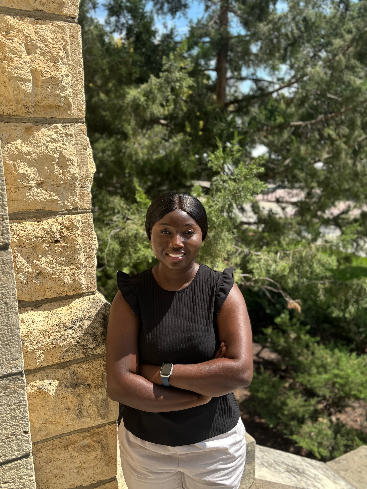

About Me

My name is Ernestina Osei. I am currently a PhD student in Geography and Geospatial Sciences at Kansas State University.
My journey to this point began thousands of miles away in Kwashieman, Accra, Ghana, where I was raised by my mother.
Education has taken me farther than I once imagined, but understanding where I am going requires remembering where I began.
Where My Story Began
I grew up in Kwashieman, Accra, as the only child living with my single mother. My mother raised me on her own and was determined to make sure that I did not repeat the mistakes she believed she had made while growing up.
She worried about the environment around me because there were not many people in our neighborhood whom she wanted me to look up to. As I grew older, people sometimes asked how I turned out the way I did despite the environment in which I was raised. For a long time, I honestly did not know how to answer that question.
All I knew was that I was an introverted young girl who believed strongly in education and self worth. I also carried one message from my mother everywhere I went: I should learn from her experiences and create a different future for myself.
I remember dreaming of attending Holy Child School, one of the well known senior high schools in Ghana. When I did not get into my dream school, despite having good grades for the program I wanted to pursue, I was deeply disappointed.
I began thinking about the things I did not have. I thought that perhaps if I had been born to wealthy parents, they could have found a way to send me to my dream school. I looked at people who had wealthy parents and father figures in their lives and wondered why my life had to be different. At that age, I thought life was simply unfair to me.
I entered senior high school without much passion. For much of that period, I felt lost. I was attending school, but I did not have a clear idea of what I wanted my future to look like.
During my final years, however, one of my teachers often spoke to us about the importance of pursuing higher education. Those conversations planted something in me.
Finding My Purpose
University seemed almost impossible at the time. Within my immediate circle, completing senior high school was already considered an achievement, and many people did not continue to university.
My mother also believed that if I wanted to attend university, I might have to wait for a few years while she gathered enough money to pay my fees. The cost of university education was simply more than we could comfortably afford.
I gathered the little money I could and secretly bought an application form to Kwame Nkrumah University of Science and Technology.
I did not tell my mother because I already knew our financial situation, and I was afraid of what her answer might be. More importantly, I did not know how I would finance my education even if I was admitted.
What I did know was that I wanted something different for my life.
I did not want my future to end with me helping my mother sell things by the roadside. There was nothing shameful about the work we did, but I knew that my mother had sacrificed so much because she wanted me to have opportunities that she did not have.
I studied hard for my WASSCE, passed my examinations, and eventually received admission to KNUST.
I had achieved what I wanted, but there was now an even bigger problem. I had to tell my mother.
When I finally told her, I knew she was not happy that I had gone through the entire process without involving her. Yet, instead of allowing our financial situation to end the opportunity, my mother found a way.
That sacrifice has remained with me. When I started university, however, my insecurities did not suddenly disappear. I still compared myself with other students.
I saw people who appeared to have more opportunities and resources than I did, and sometimes I struggled to believe that I could truly rise beyond the circumstances in which I had grown up.
Eventually, I had to ask myself what I really wanted from my life. I did not want to be someone who lived from one temporary goal to another, only to lose my sense of purpose once each goal was accomplished.
I wanted my education to mean something. I wanted to gain knowledge in my field, contribute to communities, make my mother proud, and eventually create opportunities for others.
Thousands of Miles From Home
Years later, my educational journey took me thousands of miles away from Ghana when I came to the United States to pursue my master's degree.
Arriving in a new country was exciting, but it was also terrifying. I carried so many questions with me.
My experience in the United States gradually began answering those questions.
I earned my master's degree in Geosciences, but some of my most meaningful experiences happened beyond the classroom.
Through an internship, I had the opportunity to apply what I had learned and contribute to work that benefited the local community.
I became part of a project that earned me recognition from the city. Receiving that recognition meant much more to me than having another accomplishment to add to my résumé.
IMPACT IN ACTION
Turning Research Into Positive Community Impact
My graduate experience gave me the opportunity to move beyond the classroom and use what I was learning to contribute to the community.
Seeing my work recognized reminded me that education could become more than personal achievement. It could become a way to serve others.
Read the Full Story →For the first time, I could clearly see myself fulfilling the promise I had made years earlier: to use my education to give back.
Ghana
Where my journey and belief in education began.
KNUST
Where purpose became an educational journey.
United States
Where international education challenged me to grow, adapt, and apply what I had learned.
Kansas State University
Where I am beginning the next chapter of my journey as a researcher and educator.
The Researcher I Am Becoming
Today, I have begun another chapter as a PhD student in Geography and Geospatial Sciences at Kansas State University.
I am the first woman in my family to reach this level of higher education, something I do not take lightly.
I hope the knowledge and research skills I gain in the United States will allow me to make an impact both globally and in my home country, Ghana.
My Future Research and Impact
Wildfires remain one of the major environmental challenges in Ghana because of their effects on forests, ecosystems, livelihoods, and communities.
Although Ghana has laws and regulations to prevent and manage wildfires and bushfires, I believe that research in this area is important for improving our understanding and ability to monitor and respond to these events.
My goal is to apply geospatial technologies to provide scientific information that can support informed decision making, environmental planning, and effective wildfire management in Ghana, while also contributing to the global understanding of wildfires and environmental change through my future research.
What International Education Has Taught Me
International education has given me much more than an academic qualification. It has changed how I understand opportunity, purpose, and even my own story.
Being educated in the United States has exposed me to people, ideas, technologies, and experiences that have challenged me to grow both academically and personally.
Most importantly, my journey has changed the way I understand my childhood. I once focused on everything I thought I was missing.
Now, I recognize something I could not fully appreciate then. I had a mother who, despite having limited resources herself, was determined to give me an opportunity to become more.
To My Future Self
As I think about the person I am becoming, I want my future self to remember who I am at this moment.
I am still a student. I am still learning, asking questions, making mistakes, and discovering the kind of researcher and educator I want to become.
I want her to remember that the value of this international education was never supposed to be measured only by the degrees I earned, but by what I chose to do with the opportunities those degrees gave me.
I want her to remember the communities that welcomed me, the people who invested in me, and the responsibility I now have to create opportunities for others.
I especially want her to remember my mother. The loan she took out years ago was more than money for university tuition. It was an investment in a future that neither of us could see clearly at the time.
I cannot change where my story began, and I no longer wish that I could. The experiences I once considered evidence of my misfortune have become part of what gives my journey meaning.